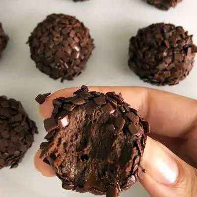

Pudim de chia
Ingredientes:
120 ml de leite vegetal ou leite de coco sem açúcar
2 colheres de sopa de chia
2 colheres de chá de xilitol ou açúcar de coco.
Modo de preparo
Em um bowl ou pote de vidro, misture o leite com xilitol ou açúcar de coco, até dissolver. Em seguida, adicione a chia e misture. Mexa bem para que as sementes de chia não se aglomerem. descansar por cinco minutos e mexa novamente. Depois, guarde na geladeira por ao menos duas horas ou faça na noite anterior. Quando for consumir, é só adicionar toppings da sua preferência, como frutas vermelhas, geleia, coco ralado, banana, pedaços de chocolate meio amargo.
Brigadeiro de banana fake
Ingredientes:
1 banana grande
3 colheres (sopa) rasa de leite em pó desnatado
1 colher (sopa) de cacau em pó.
Modo de preparo
Primeiro amasse bem a banana, coloque dentro de uma panela. Misture em fogo baixo até que ela vire uma pastinha grossa. Adicione os outros ingredientes, sempre mexendo. Desligue o fogo quando o doce começar a desgrudar da panela, igual o ponto do brigadeiro. Prontinho!! Gente fica maravilhoso, eu abro um pouco na mão e coloco morango fazendo um bombom, depois é só passar no cacau em pó. Dica: Você pode trocar o cacau por chocolate 70% cacau.